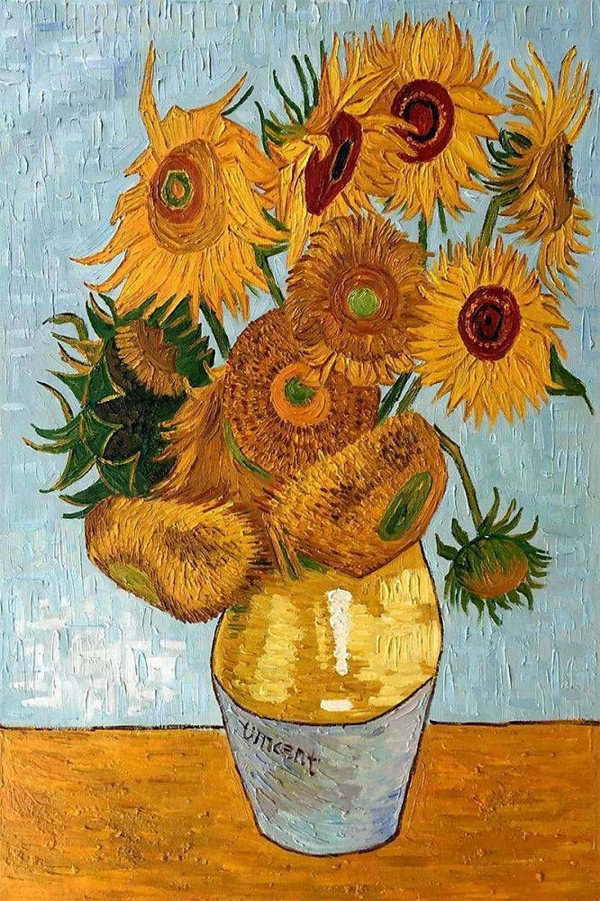

The Radiance of Creation: Van Gogh's "Sunflowers"
Vincent van Gogh's series of "Sunflowers" paintings is an ode to the brilliance and vitality of these golden blooms. Created in 1888 in Arles, France, this iconic series showcases van Gogh's mastery of color, texture, and the emotional resonance he could evoke through his art.
A Symphony of Gold
The "Sunflowers" series is a radiant symphony of gold and yellow hues. Van Gogh's use of vibrant colors is not merely a representation of the flowers but a profound expression of his emotional state. The bold, swirling brushstrokes and dynamic composition bring the sunflowers to life on the canvas, capturing their essence in a way that goes beyond mere realism.
The Power of Symbolism
Sunflowers, often associated with warmth, happiness, and adoration, take on a deeper meaning in van Gogh's work. For him, they represented the sun itself, and he painted them with the hope of bringing a sense of light and joy to his viewers. The sunflower series, with its varying stages of bloom, can be seen as a metaphor for the cycle of life and the passage of time.
Texture and Technique
One cannot discuss van Gogh's "Sunflowers" without acknowledging his innovative use of texture. The thick, expressive application of paint, known as impasto, creates a tactile quality that invites viewers to feel the presence of each petal. The texture adds depth and dimension to the painting, enhancing the overall sensory experience.
The Duality of Creation
Van Gogh created the "Sunflowers" series during a time of intense self-reflection and artistic exploration. The paintings, executed with both precision and spontaneity, reflect the duality of creation. The artist's struggle with mental health and his relentless pursuit of beauty are palpable in each stroke.
Legacy and Influence
The "Sunflowers" series has left an enduring legacy, influencing artists across generations. Its vibrant colors and emotional depth continue to captivate audiences and serve as a source of inspiration for those who seek to infuse their art with passion and expression.
Conclusion
Van Gogh's "Sunflowers" is more than a collection of paintings; it's a testament to the transformative power of art. As we gaze upon these golden blooms, we are invited into the artist's world—a world where color becomes emotion, and the canvas becomes a vessel for the soul.
In the words of van Gogh himself, "I hope the paintings will rest the troubled spirit of those who are troubled."